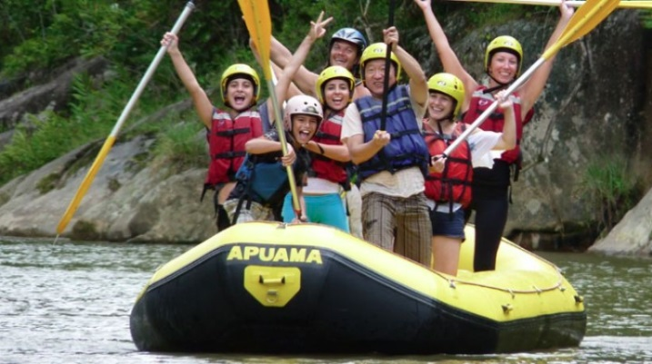
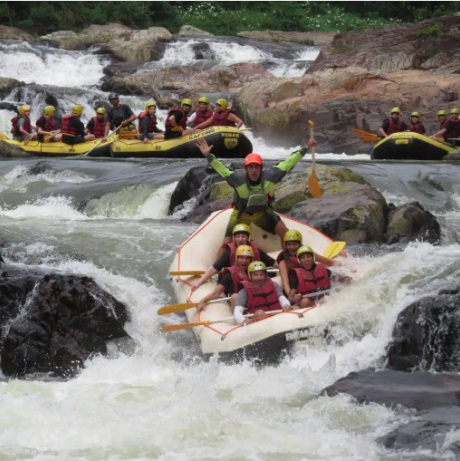
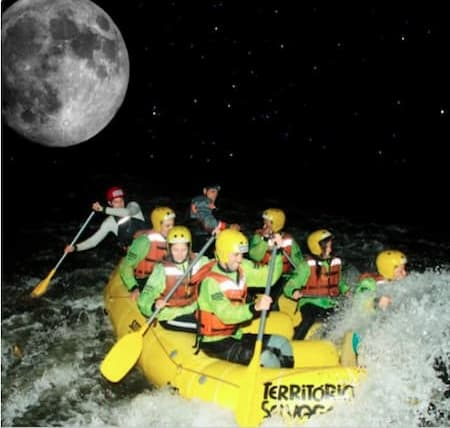

1. Corredeira Família (Nível I e II)
Perfeito para iniciantes e famílias com crianças. Um percurso tranquilo e contemplativo com pequenas corredeiras para garantir a diversão e a segurança de todos os participantes.
Escolha o seu trajeto e venha encarar as corredeiras conosco! Caso tenha dúvidas sobre qual passeio escolher, entre em contato.
Agende Seu Passeio / Fale Conosco
Perfeito para iniciantes e famílias com crianças. Um percurso tranquilo e contemplativo com pequenas corredeiras para garantir a diversão e a segurança de todos os participantes.

Para quem busca emoção e desafios intensos. Enfrente quedas d'água e corredeiras velozes com o suporte completo de nossos guias certificados. Muita adrenalina garantida!

Uma experiência mágica e inesquecível. Navegue pelo rio sob a iluminação da lua cheia, apreciando a fauna e flora noturnas com equipamentos e lanternas especiais.
| Nome do Passeio | Dificuldade | Duração | Idade Mínima | Preço por Pessoa |
|---|---|---|---|---|
| Corredeira Família | Fácil (Nível I-II) | 2 Horas | 6 anos | R$ 120,00 |
| Rota Adrenalina | Moderado/Difícil (Nível III-IV) | 3,5 Horas | 14 anos | R$ 180,00 |
| Expedição Noturna | Moderado (Nível II-III) | 2,5 Horas | 12 anos | R$ 220,00 |